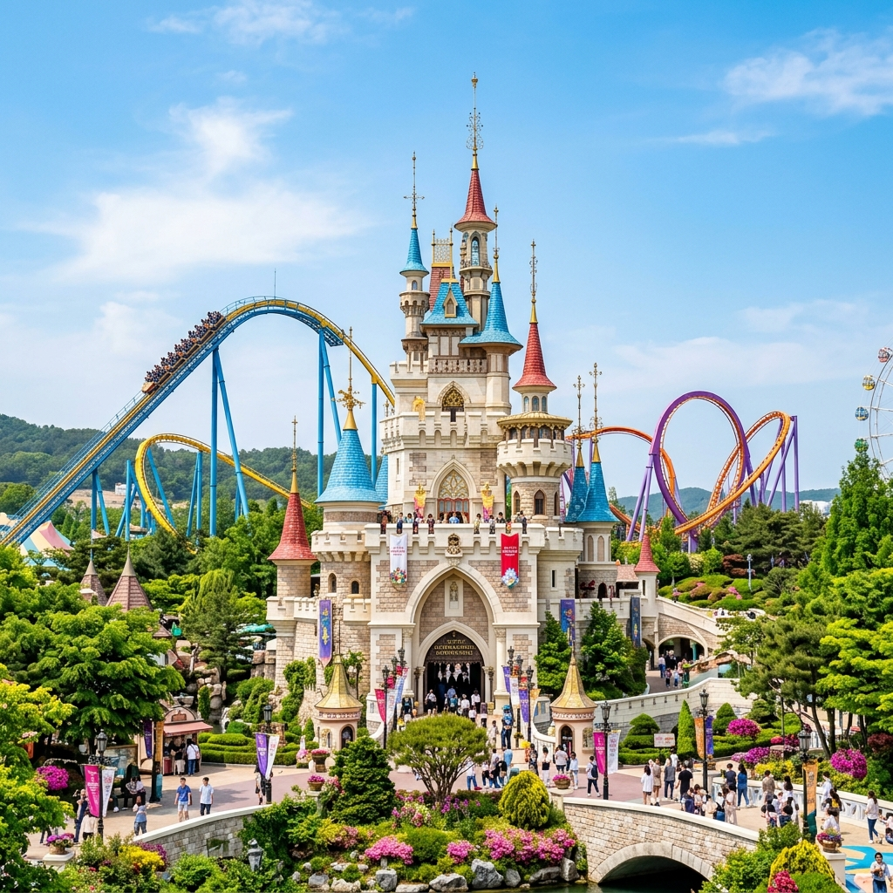
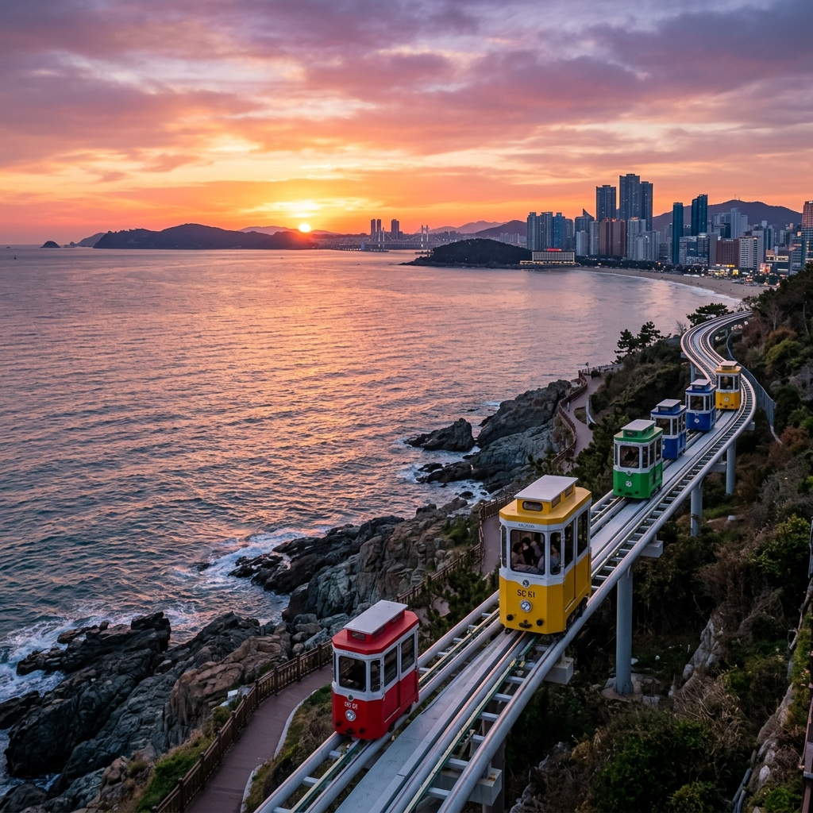

🏎️ 飆風晨間樂：Skyline Luge
09:30 的晨間微風最為舒坦，我們搭車前往機張體驗 Skyline Luge 釜山斜坡滑車 斜坡滑車（【VBP 續用】免費入場）。全家戴上安全帽，沿著專屬賽道享受平緩又充滿趣味的飆風樂趣。
11:45 運動完後，我們轉往旁邊的 Lotte Outlet 美食街 Lotte Outlet，或附近的機張高級韓牛餐廳坐下來大快朵頤，吃牛與吃辣的家人們都能輕鬆獲得滿足。
🎠 各自精采的「體能分流時間」
13:00 一到，拿出【VBP 續用】憑證，踏入如童話般的 釜山樂天世界主題樂園 樂天世界。

這裡是體能分流的最佳戰場！充滿活力的我們與女兒，可以盡情衝刺各項設施猛烈放電；而想清泉休息的媽媽與舅媽，可以到園區華麗的冷氣主題咖啡廳吃蛋糕，或者是直接回 Outlet 悠哉掃貨血拚，不費一絲力氣！
✨ [彈性外掛] 機張海岸無敵散策
在搭乘傍晚膠囊列車前的這段空檔，如果需要一點文化補給，我們可以搭計程車去全韓國唯一建在海邊的廟宇 海東龍宮寺 海東龍宮寺（唯一缺點是階梯多）；若是前幾天走累了需要「回血」，我們就直接挑一間 機張無敵海景咖啡廳 (例如超夯的 Waveon Waveon Cafe)，大家癱坐著看海發呆，這才是度假的真諦。
🚊 最美的夕陽交融：海岸邊的星空微光
下午 16:30，我們迎來全釜山顏值最高的交通工具：海雲台藍線公園尾浦站 尾浦站。

為了完美的賞景體驗，4 人將自費搭乘充滿隱私感、色彩繽紛且離海極近的「天空膠囊小火車」；另外 1 人則可利用【VBP 續用】免費搭乘下方的「海岸列車」，兩方人馬沿著同一條海岸線，伴著暖橘色的夕陽餘暉，最後在充滿漁港風情的 青沙浦站 青沙浦 浪漫會合。
18:30 晚餐將交給著名的 青沙浦烤貝 烤貝村。點上一桌豐富的貝類，店內阿姨將貼心分為兩區：一半塗滿拔絲起司與韓式辣醬，另一半則是為長輩與小孩準備的清甜原汁海鮮。晚上 20:30 返回飯店後，順便利用套房內的洗衣機清洗全家衣物，超級方便。